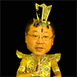

恭祝大家牛年好
首页
茗弈阁
#1 恭祝大家牛年好 作者：茗弈小刀 发表时间：2009-1-25 23:56:33
]
茗春报晓暖桃李,
弈子清雅舞寒晨;
小坛月影星光艳,
刀气横空驶牛来!
小刀祝家族的各位朋友新年快乐！祝朋友的父母身体健康！祝所有朋友牛年心想事成！好运多多！
[/dl
#2 Re:恭祝大家牛年好 作者：红豆 发表时间：2009-1-26 0:22:29
sofa 哈哈

#3 Re:恭祝大家牛年好 作者：阿花哥 发表时间：2009-1-26 0:25:12
师傅新年好，太棒了，真是一个激动人心的夜晚，祝大家新的一年牛气冲天！
#4 Re:恭祝大家牛年好 作者：阿花哥 发表时间：2009-1-26 0:26:52
真是的，红豆坐了沙发，我晚了点
#5 Re:恭祝大家牛年好 作者：茗弈小刀 发表时间：2009-2-9 20:10:23
金峰玉峦横碧空
层林尽染满江红
踏青归来月象好
不问物华闹春风
小刀祝朋友们和家人圆圆满满，红运当头，元宵快乐！